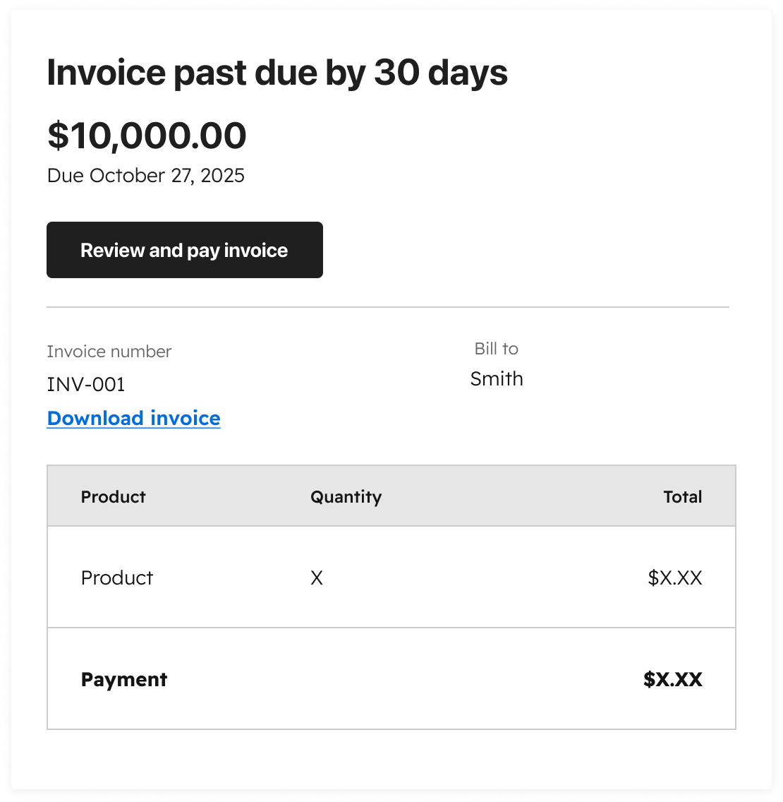
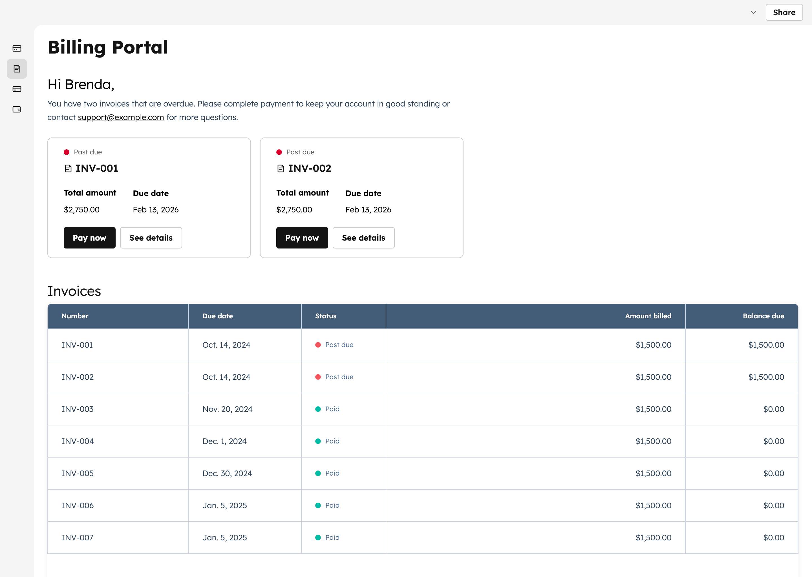
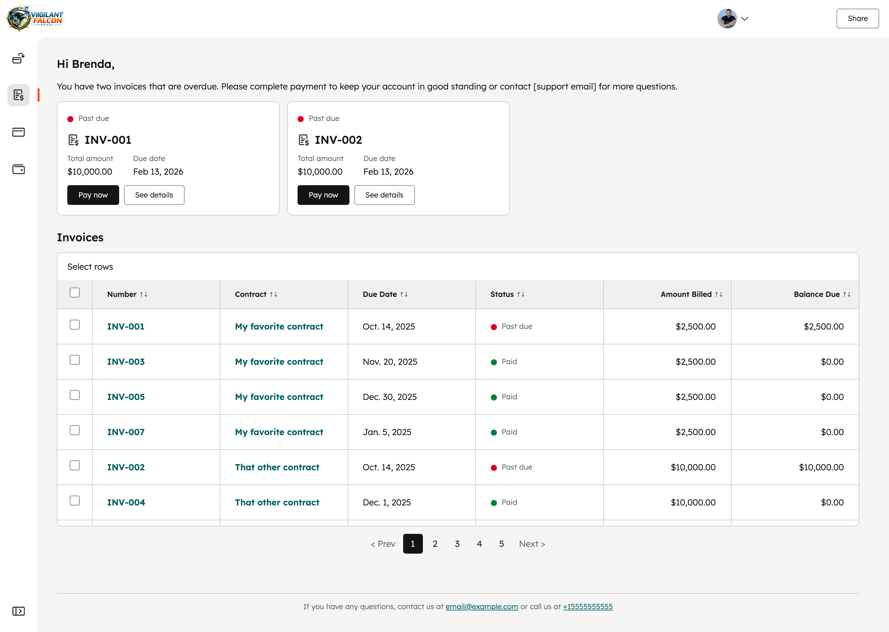
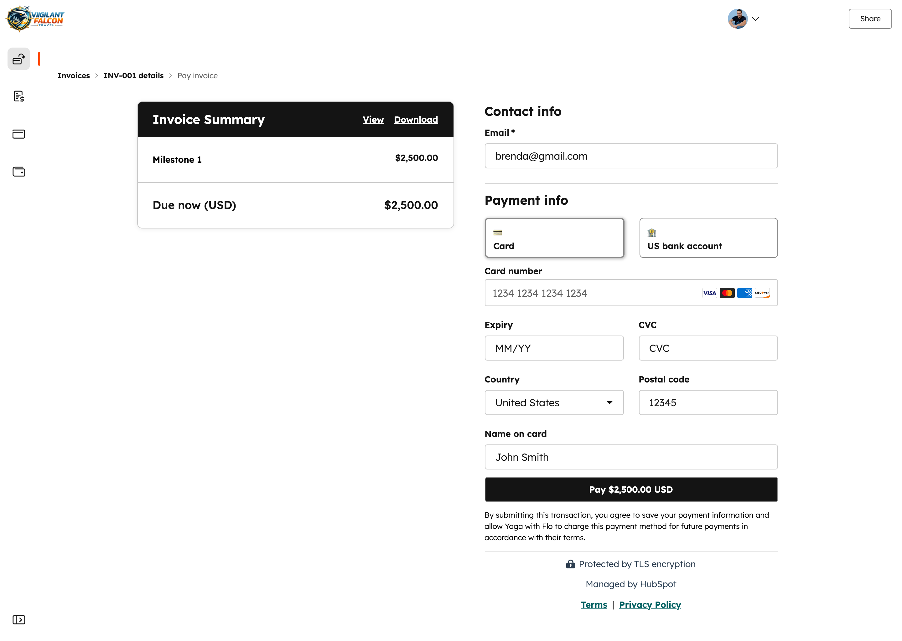

Case Study 01
The AI Customer Center
A 0→1 vision for HubSpot's end-customer portal — giving buyers a single, authenticated home to manage billing and payments at scale, explored as an agent-powered experience instead of a trail of one-off email notifications.
The Problem
No home for billing — just a trail of emails
HubSpot already gave end customers an authenticated place to submit and manage support tickets. But there was no equivalent for billing and payments. A customer couldn't log in to see an invoice, update a card, or settle a balance — let alone do any of it through an agent.
Their only path ran through one-off email notifications: an invoice coming due, an invoice past due, a payment link to pay, or a failed payment asking them to update their method. Every task started from a different email, and nothing lived in one place the customer could return to.
As Revenue Hub moved up-market, that didn't scale. Letting customers manage billing and payments themselves — reliably, and at volume — became critical. The opportunity was to give them a single authenticated portal, and then to explore what that experience could become when powered by an agent.
"Every billing task a customer needed to do started from a different email. There was no place that was theirs."

My Role
Vision lead, not just designer
I led the end-to-end product vision for HubSpot's end-customer portal — from framing the problem through to the north-star concept and a scoped first release. I drove the research that validated unifying the experience, the buyer- and seller-facing studies that grounded the agentic direction, and the design system that made the vision concrete.
What I owned
Product vision, research synthesis, end-to-end UX, the north-star concept, and the first-release scope
Who I partnered with
Product management, engineering, billing & payments, support, and the AI/agent platform teams
How it was grounded
Two research studies — one buyer-facing, one seller-facing — to read AI sentiment and pressure-test the jobs to be done
Evolution
How the work changed over time
Mapping the email-only reality
I started by mapping how customers actually completed billing tasks today. Support had an authenticated portal; billing and payments had nothing equivalent. Every task — an invoice due, a past-due balance, a payment link, a failed payment — was triggered by its own one-off email. There was no destination a customer could log into, and as Revenue Hub moved up-market, that broke down at scale.
Validating one unified portal
Our first round of research validated the core bet: customers wanted one place to manage everything, not a scattering of emails and surfaces. I built the first concept of a single authenticated portal that brought billing and payments alongside the support experience — deliberately structural, so stakeholders could react to the model before the UI.

Exploring the agentic experience
With the portal validated, I explored what it could become powered by an agent. To ground it, we ran two studies — one buyer-facing and one seller-facing — to read sentiment around AI and understand which jobs to be done an agent could realistically own versus where a human still mattered. That shaped an agent designed to act on real billing context, not just answer questions.
The concept centered on a conversational billing agent that takes real action — adding seats from a plain-language request, processing the change, and issuing a prorated invoice — with live subscription and payment context alongside. You can click through the live concept just below.
The vision, and a scoped first release
The north star pulled it together: a single authenticated portal where customers see their contracts, settle invoices, manage payment methods, and recover from a failed payment — all in one place. From that vision I scoped a first release around the highest-value self-serve billing jobs, with the agentic experience as the next horizon to build toward.


The Vision
One portal for the whole relationship
The north-star we designed toward: a single authenticated home where a customer can see every contract, settle invoices, manage payment methods, and recover from a failed payment — instead of chasing a trail of one-off email links.
Key Decisions
Three choices that defined the design
One unified portal vs. extending the support portal
We considered
Bolting billing onto the existing authenticated support experience as another section.
We chose
A single unified customer portal designed around the customer's jobs, with billing and payments as first-class citizens.
Because
Research validated that customers wanted one place — not a billing area grafted onto a support tool built for a different job.
Lead with the agent vs. validate sentiment first
We considered
Committing to an agent-first experience up front, on the assumption customers would welcome it.
We chose
Running buyer- and seller-facing studies first, then scoping the agent to the jobs it could realistically own.
Because
Sentiment around AI is uneven. We needed to know where an agent earns trust and where a human still matters before designing around it.
Ship the whole vision vs. scope a first release
We considered
Holding delivery until the full agentic portal was ready to ship as one piece.
We chose
Scoping a focused first release around self-serve billing, then building toward the vision.
Because
Getting customers off email-only billing was worth shipping now — and a real release de-risks and funds the larger agentic bet.
What I Learned
What I learned leading this work
Designing the agent was really designing the platform beneath it
An agent is only as good as the context it can act on. Designing the agentic experience forced conversations about data access and billing state that hadn't happened yet — the design work surfaced platform requirements and put them on the roadmap. AI-platform design is systems design first, surface design second.
Trust in AI is a design problem, not just a model problem
The buyer- and seller-facing studies made it clear that adoption hinges on trust, not capability. The design job was deciding which jobs the agent should own, where it should defer to a human, and how it signals that honestly — so customers feel in control, not handed off to a black box.
Vision work requires a different kind of courage
Designing for a future state with no ticket, sprint, or clear owner is uncomfortable. I learned to treat the north-star artifact as a persuasion tool first and a spec second — the goal was to make the future feel inevitable, then scope a real first release that earned the right to build the rest.
Stakeholder alignment is a design deliverable
The most important artifact wasn't a prototype — it was the framing that got product, engineering, billing, support, and the AI platform team into one room with one understanding of the problem. On platform work that spans teams, alignment is the design.
Outcomes & Impact
What this work moved
The work defined the direction for HubSpot's end-customer portal. From the vision I scoped a focused first release around self-serve billing — getting customers off email-only tasks and giving them a place that's theirs — while the agentic experience remains the horizon the team is building toward.
Next Chapter
Where this goes from here
The next horizon is making the agent proactive rather than reactive — surfacing billing anomalies, renewal reminders, and account risks before the customer has to ask. That means a different data architecture and a new interaction paradigm: the agent as a persistent, trusted presence rather than a fallback.
The hardest and most important part is designing for the moment the agent is wrong — how the portal stays transparent about its confidence and rebuilds trust after a bad answer. Designing AI people actually trust is the problem I most want to keep working on.